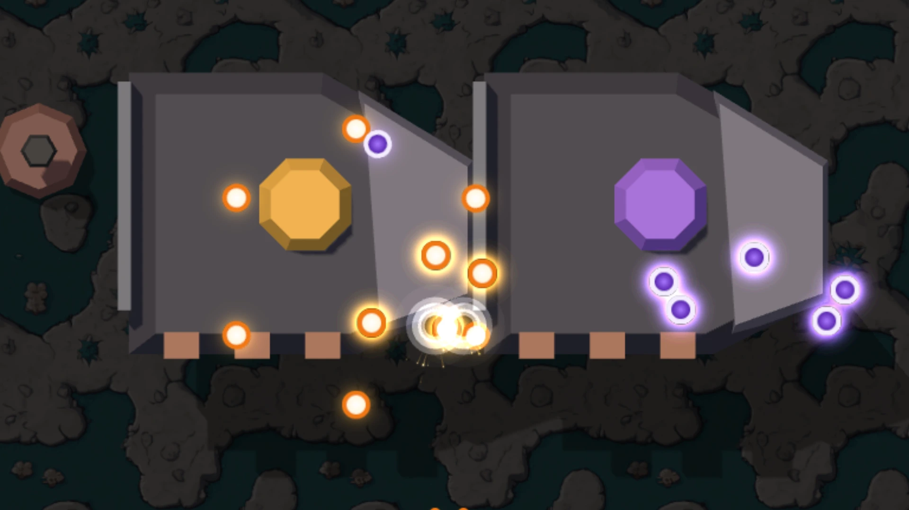
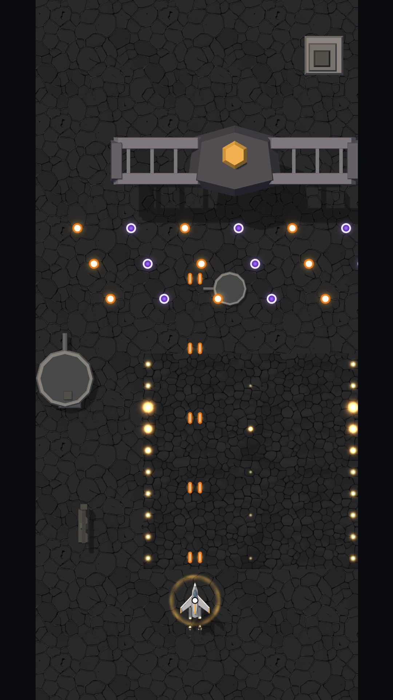
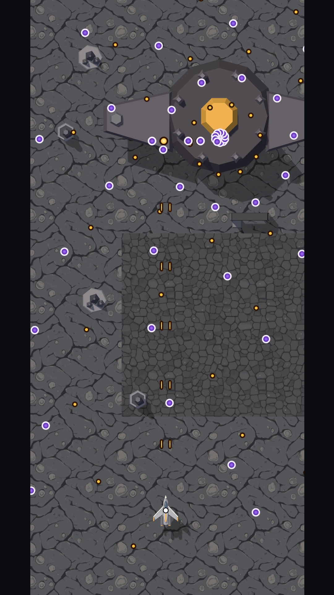

Flipwake — a colour-switching shooter
Flipwake is a vertical shooter that runs in your browser: your ship flies up the screen through waves of amber and violet bullets, and with one button it flips between those two colours. Anything fired in your colour, you swallow instead of dodging. It is free, with nothing to download and no account, alone or with up to three friends, on a phone, a tablet or a computer.


Flipping and drinking bullets
The two colours are Ember, an amber, and Iris, a violet. At any moment your ship wears just one. A bullet of your colour does no harm: the ship soaks it up, and it reaches a little further out than the ship's body to do it. A bullet of the other colour hurts. So the whole game is reading the next wave and choosing which colour to be when it lands. The part of the ship that can be hit is tiny, three pixels across the middle, so a stream of the wrong colour can still be slipped through if you hold steady.
The burst and bombs
Every bullet you drink fills the burst meter. At 40 it fires by itself: eight homing shots that find the nearest enemies. Drinking is therefore your best weapon as well as your shield. You also start with two bombs. A bomb clears the bullets around your ship, for the moment a pattern has closed in and no flip will save you.
The chain
Shoot down three enemies of one colour in a row and you make a set. Each set adds one to your chain and pays more than the last: 100 points, then 200, then 400, doubling up to 25,600. Hit a mismatched enemy before a set is finished and the chain is gone. A longer chain also makes your burst hit harder, so a careful run gets stronger as it goes.
Five stages and five bosses
A run takes you through five stages in a fixed order, starting at Dustline and ending at Heartfall, with Saltpan, Foundry and Twinsea between. Every stage sends a mid-boss partway through and a boss at the end, and each boss changes its pattern in phases with a three-second rest between them. Dustline ends with the Furnace, Saltpan with the Loom, and Foundry with the Anvil, whose armour plates take four times the damage from a burst. In Twinsea the Twin flies in two halves, Ember on the left and Iris on the right, each hurt only by the other colour, and at half health the halves swap sides. Heartfall ends with the Crown, whose core turns from Ember to Iris every four seconds and flickers during the final second before it changes, as a warning. Beat the Crown and the four pilots, Sora, Rook, Mina and Tevi, report in with Commander Halden, each with one line over the radio, before the final tally.
Playing alone, the game remembers the furthest stage you reached on your device, and the title offers to continue from it.
Gentle and Arcade
Start plays Gentle. A hit costs you a three-second shield and nothing else: you have no lives to lose and no game over, so anyone can see all five stages. Arcade gives you three lives, and losing the last one ends the run.
Keys, touch and gamepad
You can fly with keys, with touch or with a gamepad, and switch between them at any time.
On a keyboard, the arrows or WASD move the ship and Shift slows it for fine dodging. Space flips colour (J or Z work too), K or X fires a bomb, and Esc or P pauses.
On a phone or tablet, drag anywhere to move. The ship follows your finger's movement rather than sitting under it, so your finger never hides it. A second finger anywhere flips, or use the flip button, which lights up as a wave in the opposite colour approaches. A bomb button sits beside it. Leaving the tab pauses the game.
A gamepad works as well: steer with the left stick, press A to flip, B or X to bomb, and hold a trigger to slow down.
Playing with friends
To fly together, choose Play with friends from the title, which opens a room. Up to four pilots fly on one shared screen, and any number of people can watch. The host shares a Play link, which gives a friend a seat if one is free and the run is still waiting, or a Watch link, which never takes one. Anyone who opens a Play link after the start watches instead.
When an Ember ship and an Iris ship stay near each other, a bright line links them, and for as long as it holds, each ship can swallow either colour. In Arcade a ship that has lost its last life becomes a small tumbling pod, and a teammate who touches it for a second and a half revives it with a single life. Everyone adds to a single team score, and the tally shows each pilot's own line. Bosses grow tougher with each ship in the room.
If your tab goes into the background you give up your seat and keep watching. If the host leaves, the room ends.
What is not done yet
The game speaks English only. A room ends when its host leaves, because no other player takes over as host yet, and a player cannot join a run that has already started. Nobody outside the studio has playtested it yet. Twinsea's open water is drawn as shallows, because the deep-sea ground made for it did not pass its check.
More like this: 2-player games online · Multiplayer browser games